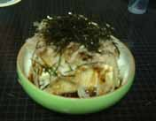

豆腐の一番好きな食べ方。まず、たまねぎを薄くスライスしたもの(豆腐にのっかるくらいの量)を水にさらしておき（たまねぎの辛みを弱くするた め)、豆腐の上にそのたまねぎ、鰹節、しょうゆ、サラダ油、もみのりをかけて食べる。これは美味しいです。
有名なほうれん草のごまあえ。ほうれん草をゆでて水気をなるべくとり、そこに味噌、すりごま、砂糖をいれて揉む。ゆでるかわりにラップでくるんでレ ンジに入れるという方法も。
豚肉のうす切り肉にすりしょうがをもみこみ、サラダ油とめんつゆで炒めるとこれがかなりいける！いい御飯のおかずになります。
サラダのチョットしたドレッシングに、しょうゆ＋サラダ油、しょうゆ＋ごま油、マヨネーズ＋ケチャップ、マヨネーズ＋酢酸＋すりごま、オリーブオイ ル＋塩胡椒(＋酢酸)。なかには「え？」というものもあるかもしれませんが、すべてそれなりのドレッシングです。